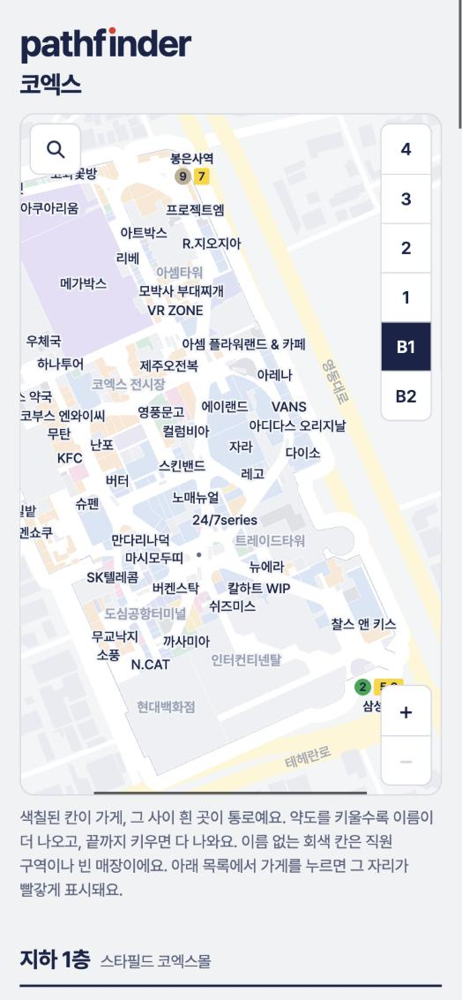

서비스 소개
pathf
ı
nder
서울 3대 미로, 이제 지도가 있어요.
2026년 11월
문제
갈 때마다 길을 잃는 곳이 있습니다
코엑스
6개 층 · 매장 324곳
스타필드 코엑스몰과 전시장

잠실역
15개 층 · 가게 1,401곳
롯데백화점, 롯데월드몰, 캐슬플라자

고속터미널
13개 층 · 지하상가 칸 609개
지하상가, 신세계백화점, 고속버스터미널
pathfinder
원인
안내는 있지만 흩어져 있습니다
01
건물마다 다른 안내도
고속터미널 한 곳만 해도 운영하는 곳이 넷이라, 안내도도 네 군데에 따로 있습니다.
02
지하에서 약한 GPS
실내와 지하에서는 위치가 잘 안 잡히고 수십 m씩 틀립니다.
03
따로 찾는 팝업 정보
지금 열리는 행사와 팝업은 지도와 다른 곳에서 다시 찾아야 합니다.
pathfinder
해결
층, 가게, 길을
약도 한 장에 모았습니다
pathfinder는 복잡한 실내 공간의 지도와 그 안에서 열리는 팝업을 한곳에서 보여 주는 서비스입니다.
pathfinder

제품
화면의 주인공은 약도입니다
1
찾기
돋보기를 눌러 가게 이름, 시설, 칸 번호를 칩니다.
2
층 이동
고르면 그 층으로 바뀌고 자리가 빨갛게 표시됩니다.
3
길 안내
출발지를 고르면 통로를 따라 파란 길과 거리가 나옵니다.
pathfinder
현황
세 곳이 모두 열려 있습니다
3
장소
34
층
2,796
가게 이름
| 장소 | 층 | 가게 | 길 안내 |
|---|---|---|---|
| 코엑스 | 6개 | 324곳 | 통로를 따라 |
| 잠실역 | 15개 | 1,401곳 | 직선 |
| 고속터미널 | 13개 | 1,071곳, 지하상가 칸 609개 | 지하상가는 통로, 그 밖은 직선 |
2026년 11월 17일 기준. 운영사 공식 층별 안내와 공공데이터에서 받은 자료입니다.
pathfinder
만드는 방식
장소 하나는 폴더 하나입니다
01
공개 자료
운영사 공식 층별 안내, 공공데이터, 오픈스트리트맵
02
스크립트
파이썬 스크립트 6개가 자료를 약도 데이터로 바꿉니다
03
장소 폴더
약도, 층, 가게 목록이 폴더 하나에 담깁니다
04
같은 화면
모든 장소가 화면 코드 하나를 같이 씁니다
서버 없음
정적 파일만으로 돌아갑니다.
화면 코드 하나
장소 이름이 코드에 들어 있지 않습니다.
여섯 단계
새 장소를 여는 순서가 정리돼 있습니다.
pathfinder
다음 단계
미로에서 백화점과 쇼핑몰로 넓힙니다
지금
서울 3대 미로
코엑스, 잠실역, 고속터미널
가게 찾기와 길 안내
코엑스 전시장 행사 목록
다음
백화점과 복합쇼핑몰
같은 방식으로 장소 추가
몰 안 팝업 정보
그다음
더 꼼꼼한 길 안내
층을 오가는 길 안내
전시장 안 홀 위치
잠실의 통로를 따라가는 길
pathfinder
수익 모델 · 가설
수익은 세 군데에서 나올 수 있습니다
01
팝업·행사 노출
팝업 주최사가 약도 위에 자리와 기간을 올리고 노출 비용을 냅니다.
02
운영사 제휴
몰과 백화점에 약도와 길 안내 화면을 공급하고 이용료를 받습니다.
03
가게 소식
가게가 자기 칸에 소식과 할인을 올리는 구독 상품입니다.
아직 검증하지 않은 가설입니다. 금액과 순서는 정하지 않았습니다.
pathfinder
팀
혼자 만들고 있습니다
강유림
인하대학교 인공지능공학과 · 개인 프로젝트
기획과 디자인
약도가 주인공인 화면을 정하고 다듬습니다.
개발
화면 코드와 약도를 만드는 스크립트를 짭니다.
자료
공식 안내와 공공데이터를 모아 약도로 옮깁니다.
pathfinder
필요한 것
널리 공개하려면 세 가지가 필요합니다
01
운영사의 허락
가게 칸 모양은 운영사의 도면입니다. 널리 공개하기 전에 허락을 구해야 합니다.
02
자료 새로 받기
가게와 행사 자료는 2026년 11월 17일에 받은 것입니다. 꾸준히 새로 받는 길이 필요합니다.
03
[요청하는 것]
[투자 금액, 제휴, 지원처럼 이 자리에서 요청할 내용을 적어 주세요]
pathfinder
고맙습니다
pathf
ı
nder
서울 3대 미로, 이제 지도가 있어요.
강유림 · [연락처]